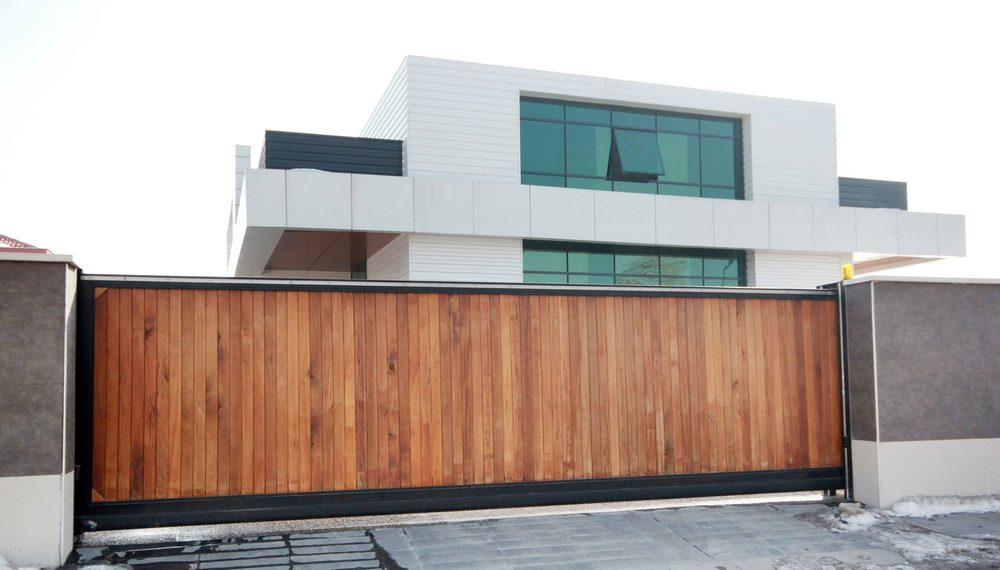
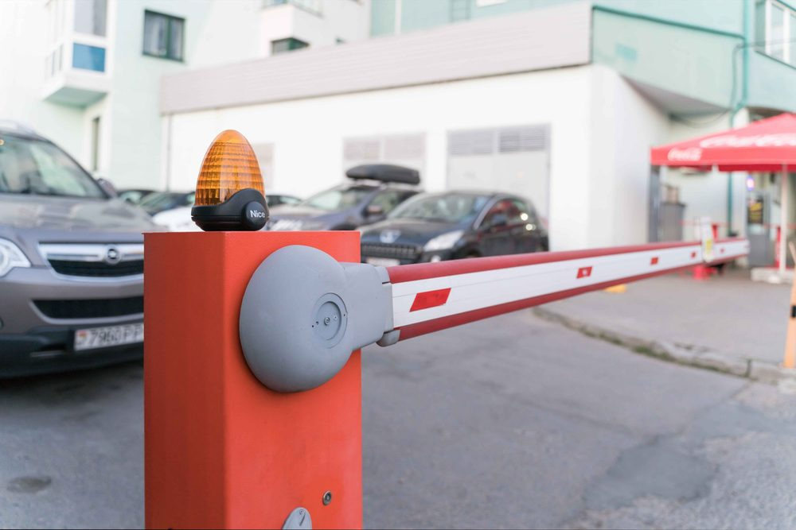

In This Guide
- An automatic gate runs on a chain of parts: an activation device, a control board, a motor, and sensors that keep everything safe.
- Sliding, swing, and barrier arm gates all use the same basic parts but move differently and need different amounts of space.
- Obstruction sensors and reversing controls stop a gate that meets a person, a pet, or a vehicle.
- Backup power and a manual release keep the gate usable through Louisiana storms and outages.
Press a button and a heavy gate glides open. It looks like magic, but it is a simple chain of parts, each with one job. A device sends a signal, a control board decides what to do, a motor moves the gate, and sensors make sure nothing gets hurt along the way.
This guide from Big Easy Fence follows that chain from start to finish. You will see what each component does, how the main gate types differ, and what to check when a gate acts up. To see the range we install, visit our automatic gates page.
The Basic Idea: Signal, Decision, Motion
Every automatic gate follows the same sequence, whether it guards a driveway or a parking lot.
- Something asks the gate to open. A remote, keypad, intercom, sensor, or phone app sends the request.
- The control board decides. It checks the request and whether the gate is free to move.
- The motor moves the gate. A drive mechanism pushes a swing arm, pulls a sliding gate along its track, or lifts a barrier arm.
- Sensors keep watch. They stop the motion if something is in the way.
- The gate closes. It closes on a timer or on a second command.
The Parts Inside the System
The Operator and Drive
The operator is the motor and drive that physically moves the gate. It supplies the power, and it is built to handle daily use. Different gate types use different drives, such as an arm, a chain, or a wheel on a track. Our post on automatic gate openers looks at the main options.
The Control Board
The control board is the brain. It reads signals from remotes and sensors, tells the motor when to run, and manages timers and safety settings. When a gate behaves oddly, this board is often part of the story.
Sensors and Safety Devices
Sensors detect vehicles, people, or obstacles in the path of the gate. Some sense a car approaching, and others watch the opening for anything that should stop the gate from moving.
Ways to Open the Gate
Owners can pair a gate with a wide range of activation devices.
- Remotes. A button in the car or on a keychain sends the signal.
- Keypads. A code opens the gate for people without a remote.
- Intercoms. Visitors call from the entrance and someone opens the gate remotely.
- Phone apps. Some systems let you open the gate from a smartphone.
- Key cards and biometrics. Higher-security properties may use cards or fingerprint readers.
Power and Backup
Gates run on electricity, so the power source matters. Many systems include a battery backup that keeps the gate moving during an outage, and some add solar charging. A manual release lets someone open the gate by hand if power fails.
Sliding, Swing, and Barrier Arm Gates
The three most common designs share the same core parts. They differ in how they move and how much room they need.
| Gate Type | How It Moves | Space Needed | Common Use |
|---|---|---|---|
| Sliding | Rolls sideways along a track or rail | A clear run beside the opening | Driveways and tight entrances |
| Swing | Opens inward or outward on hinges | Room for the gate to swing | Homes and businesses with open space |
| Barrier Arm | A horizontal bar lifts and lowers | Small footprint at the entry | Parking lots and controlled access |
Sliding Gates
A sliding gate moves along the fence line, so it does not swing into the driveway or the street. That makes it a good fit for tight entrances. Sliding systems need a track or rail and a clear stretch of fence for the gate to roll into.

Swing Gates
Swing gates open on hinges, like a large door, and one or two motors do the pushing. They need open ground to swing through, but they can look very natural on a residential entrance.
Barrier Arm Gates
Barrier arms are common in parking lots and restricted areas. They raise a bar to let traffic through and lower it to stop vehicles. Key cards, sensors, and remotes usually control them, and the frequent use means they need regular servicing.

Businesses with larger sites can also look at our commercial automatic gates.
How the Safety Features Work
A gate is heavy, so safety is part of the design. Modern systems use several layers.
- Obstruction sensors. Photo eyes and similar devices detect something in the gate's path and stop it.
- Reversing controls. If the gate meets resistance while closing, it stops or reverses, so it will not crush anything.
- Warning lights and timers. Lights signal that the gate is about to move, and timers keep it open long enough for vehicles to clear.
Storms, Outages, and Backup Power
Power cuts are a fact of life during storm season in Louisiana. A gate with no backup can leave you stuck inside or shut out. A battery backup keeps the gate cycling through a short outage, and a manual release lets you open it by hand once the batteries run out. Ask your installer how many cycles the backup provides and how to use the release.
Common Problems and Simple Checks
- The gate will not respond. Check the remote battery, then the power source and any backup battery.
- The gate stops or reverses at random. A misaligned or dirty sensor is a common cause, so wipe the lens and check that nothing blocks it.
- The gate moves roughly. Look for debris on the track or hinges, and for leaves and dirt along the path.
- The gate will not close fully. An obstruction, a shifted post, or a sensor fault can be to blame.
Cleaning sensors and clearing debris are fine for an owner. Anything involving the control board, wiring, or the motor should go to a qualified technician, since the system carries electricity and moving parts.
Keeping the Gate Running Smoothly
Regular care extends the life of the whole system. Lubricate moving parts as the manufacturer directs, check bolts and hinges for looseness, keep tracks clear, and test the safety sensors on a schedule. A professional service visit once in a while catches wear that is hard to spot.
When you are ready to add an automatic gate, our residential fencing team can help you choose a style and an opener that fit your property.
Thinking About an Automatic Gate?
Tell us about your driveway or entrance and how you want it to work. We will help you pick a gate style and a way to open it.